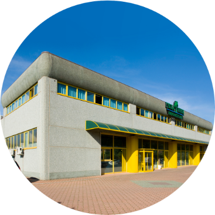

SCEGLIAMO PER TE SOLO IL MEGLIO DELLA NATURA
LA STORIA
Nata dall’intuizione e la passione per il mondo della medicina naturale del fondatore, Franco
Fontanelli, L’Isola Verde
Erboristerie, da oltre venti anni seleziona e propone solo il meglio del mondo erboristico presente sul mercato
italiano, selezionando soluzioni e prodotti specialistici del settore erboristico, integrativo alimentare,
cosmetico
naturale, alimentare biologico, e sanitario, fino all’oggettistica.
Una scelta che vanta collaborazioni lunghe e collaudate con i brand storici del mondo bio, votata sempre alla
ricerca
dei nuovi che portano innovazione. L’Isola Verde Erboristerie, è sinonimo di standard elevati di qualità e
affidabilità,
sia grazie a partnership con le più importanti aziende sul mercato che per i brand di produzione propria.
L’Isola Verde Erboristerie rappresenta una bussola affidabile e sicura per affrontare un mare di offerte sempre
più
vasto.
Un approdo sicuro, per la tua salute e il tuo benessere, dove la parola “esperienza” vuol dire anche garanzia e
affidabilità
DA COMMERCIANTI A PRODUTTORI

L’Isola Verde Erboristerie nel 2006 inizia una nuova avventura quella della creazione di
prodotti cosmetici naturali di
altissima qualità. Così dalla migliore tradizione erboristica italiana e i più puri principi attivi delle aree
più
selvagge della foresta Amazzonica brasiliana nasce “DoBrasil” una linea cosmetica naturale che dà vita a
prodotti di
eccellente qualità per il benessere e la bellezza, distribuiti in esclusiva solo nel circuito di erboristerie de
L’Isola
Verde. Dalla passione per il miele e l’apicoltura nasce “Apinfiore” che crea una vasta gamma di meravigliosi
prodotti a
base di miele
UNA BUSSOLA NEL MARE DI OFFERTE
Non solo vendita. Quello da sempre contraddistingue L’Isola Verde Erboristerie è il rapporto
con la propria clientela. E’
un privilegio, frutto di professionalità e dedizione, il legame di fiducia tra clienti e il nostro personale. I
nostri
consulenti di benessere, nutrizionisti, naturopati, esperti del settore e consulenti di benessere saranno a tua
disposizione nella ricerca e nella scelta dei prodotti migliori per il tuo benessere e per la tua salute. Con
oltre
3.000 referenze tra i migliori prodotti naturali per integrazione, cosmetica, salute e alimentazione e 200
negozi in
tutta Italia, c’è solo l’imbarazzo della scelta.

VIENI SULLA TUA ISOLA DI BENESSERE
L’Isola Verde Erboristerie è anche un luogo di divulgazione e informazione del mondo erboristico e del
benessere
naturale, dove ci sono sempre più di un tesoro da scoprire.